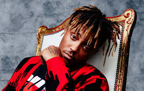

A Great Singer Who Played A Great Role In Bringing Mental Health To People Through His Song

Juice Wrld
A Short Biography And Contribution of Late Artist Jarad Anthony Higgins In The World
Jarad Anthony Higgins known professionally as Juice Wrld (pronounced "juice world"), was an American rapper,
singer, and songwriter.
He was a leading figure in the emo rap and SoundCloud rap genres which garnered mainstream attention during
the mid-late 2010.
Higgins began his career as an independent artist in 2015 and signed a recording contract with Grade A
Productions and Interscope Records in 2017.
With his amazingly captivating rap skills, Juice WRLD was able to inspire a generation of kids to tap into
their emotions.
Juice spoke openly about his pain and heartbreaks, which became signature themes in his music – at odds with
rap’s typical braggadocio..
It’s his ability to narrate the inner turmoil of many kids – who perhaps couldn’t speak up for themselves –
that won the hearts of a generation.
Our love to juice Wrld:“It’s his authenticity. Not only is he not scared to be authentic in his words and
how he delivers it; he doesn’t want to do anything else… He laid out his life for people to connect to him.”
Jarad Anthony Higgins was born on December 2, 1998 and died on December 8, 2019 due to overdose, the music
world still feels the tremors of his absence. Jarad Higgins, who was just 21 years old when he passed,
turned his legions of fans onto his ’00s emo influences while also dubbing himself the “codeine Cobain”.
He allegedly left over 200 songs in the vault after his passing, according to a tweet from his manager,
Chicago drill star-turned-label Grade A label founder Lil Bibby.
Juice WRLD's last known words, spoken just nine days before his tragic overdose, were a message to his fans:
“I love ya'll more than life itself.”
Juice WRLD was taken from the planet as he was on the cusp of greatness. But that hasn’t stopped him from
being one of today’s biggest stars.
Able to tap into the hearts of a generation by cathartically divulging his inner-most feelings,
Juice
tackled the usually unspeakable hidden demons that affect many out there. Defying the harmful myth
that
men
shouldn’t be emotional, he knocked down barriers around mental health and, like any true great
rapper,
gave
a voice to the voiceless. He truly proves that a legend can never die.